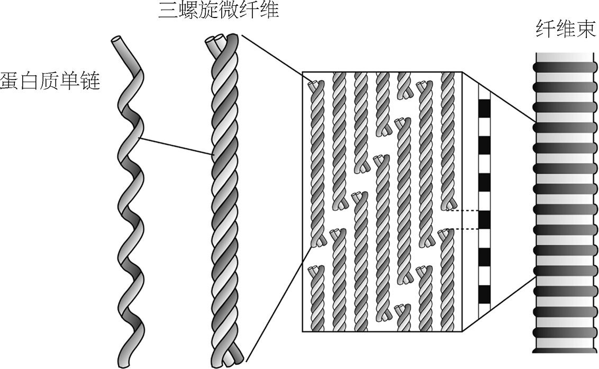
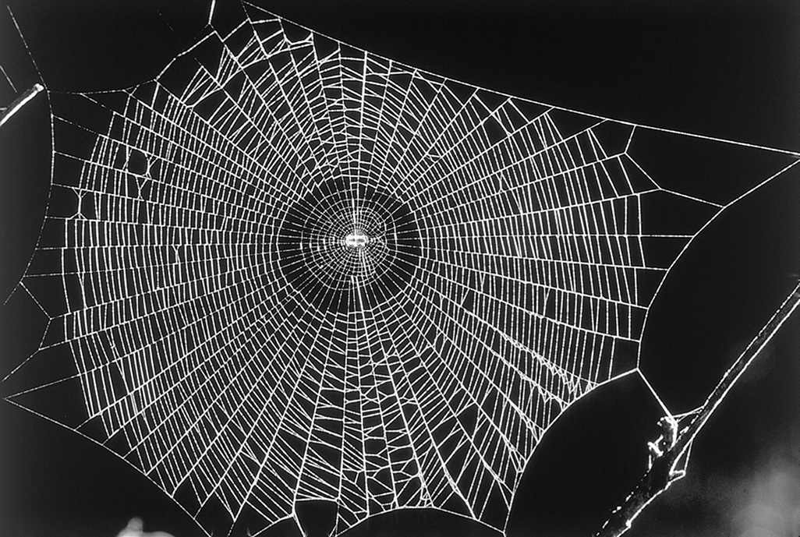
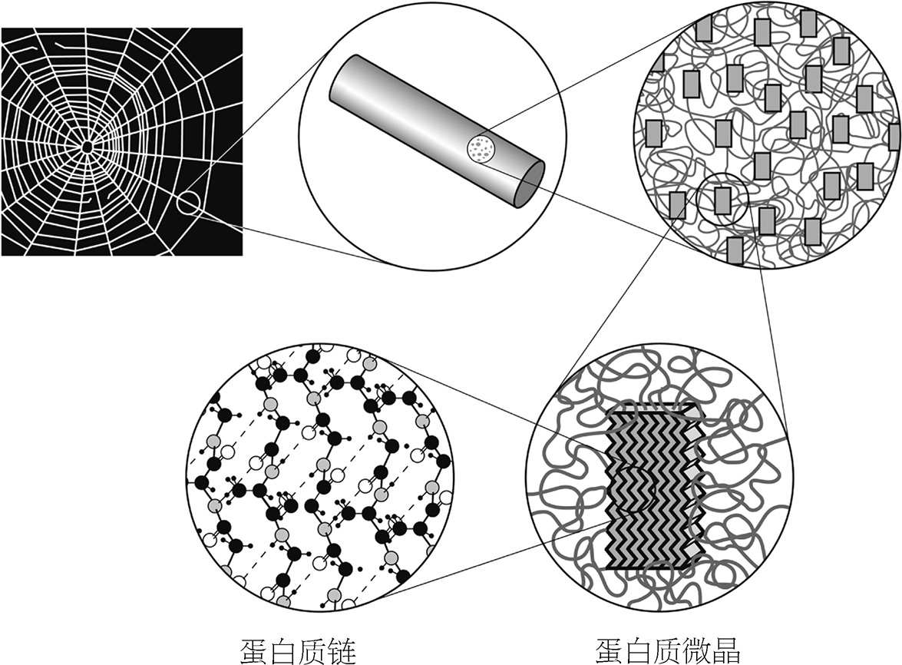
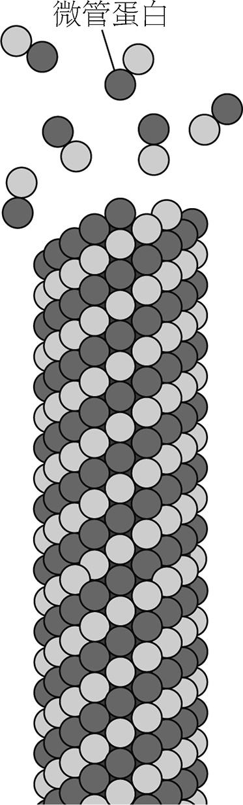
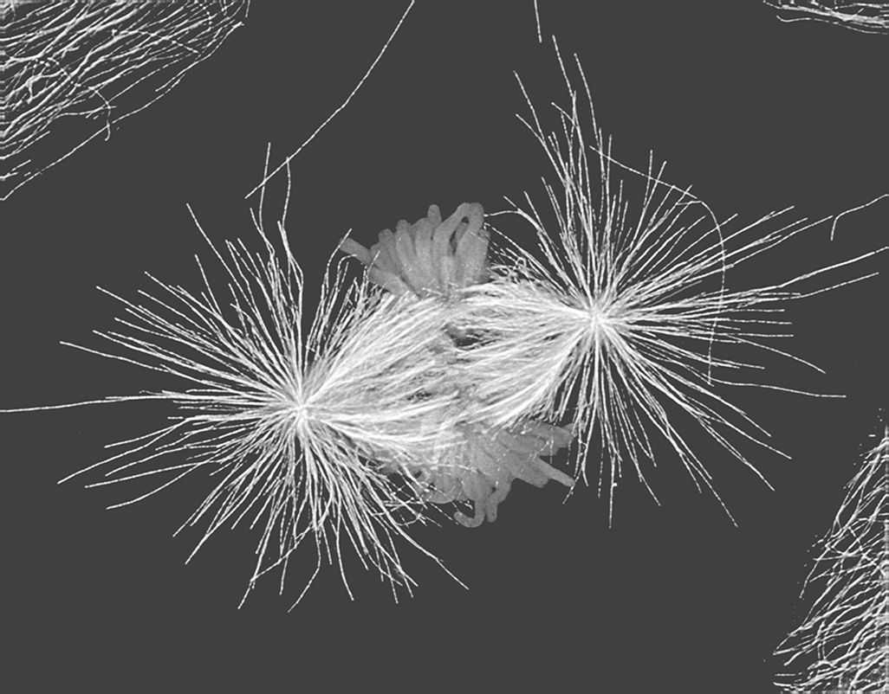
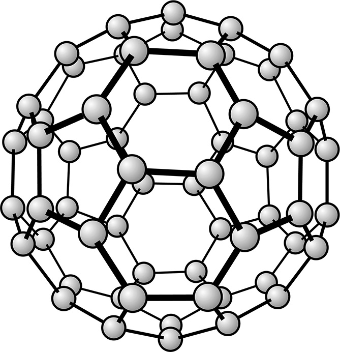
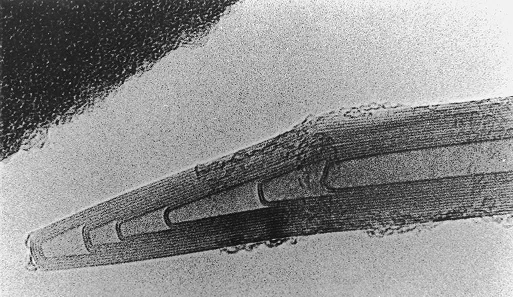

空间旅行最困难的部分（除了无聊和危险以外）在于出发。在虚空的空间中，没有太强的引力作用，一次小幅的推进就能使火箭移动几乎无穷远。因此，火箭装载的大部分燃料仅仅是用于让火箭逃离地球的引力。这些燃料和燃烧它们的发动机就占据了火箭总重的大半。我还清楚地记得，“阿波罗号”在离开地球时高大得像座耀眼的大厦，返回来时却小得像鼻尖似的。
因此，要是我们可以从地球的大气层外发射飞船，那负荷就能大大减少了。亚瑟·C.克拉克在小说《天堂的喷泉》里提到过有可能怎样实现。他设想了一种空间电梯：在对地静止的卫星轨道上置一平台，然后用超强的长缆绳将它与地面连在一起。空间设备和乘客首先通过穿梭电梯从地面输送到平台上，然后从平台发射到太空中，这样所需的燃料比起从地面发射就只是一小部分了。
要把绕地运行的平台与地表相连接，我们就需要特别强劲的缆绳，比现今已有的任何一种东西都要强劲得多。这种缆绳还要很轻，要是用普通钢缆就太重了。
其实，要解释我们为何需要具备结实、强韧、耐腐蚀、轻便等特性的材料，并不非得借助于空间电梯这种幻想的概念。但这样的情景能够激发我们思考，到底可以将材料的特性推进到何种程度。我们还可以考虑将超强劲“空间绳索”用于太空发射，先把载荷用缆绳连到绕地卫星上，然后像弹弓一样发射出去。这样的绳索要又轻又结实。即便是在非常普通的需求中，结实的缆绳也求之不得：比如悬吊桥梁，以及在海底固定钻井机。
然而，强韧纤维一直都在我们身边，我们很幸运地接受了大自然大量的馈赠：丝、麻、木材、毛发。在革命前的俄国，人们用蚕丝来防弹。如今为了相同的目的，人们研发出了人造蚕丝。
塑料时代正式开始于20世纪初，这个时代除自然纤维以外，人们又有了合成纤维作为补充，它既有优点也有缺点。最初的塑料是在不断地试错中发明出来的；现代的塑料与此相反，是依据应用场景从分子层面设计出来的。这一章将从分子的视角来看材料，我会把讨论内容同时集中在自然纤维和人造纤维上，因为它们提供了特别美丽且图像化的例子来说明，分子结构如何影响工程师所忧心的材料特性。
不过分子科学和材料工程的互动远比这小小一面要广泛得多。人们可以设计分子，让它们转化为超硬的耐高温陶瓷材料。航天工程、轮机制造和发电中会用到这种材料。人们还可以设计分子材料（尤其是聚合物材料），让它们导电，捕获、传输及转化光脉冲，过滤其他分子，或者保护界面不受污染和侵蚀。其中包括根据环境自动发生变化的“智能”材料，可以用作自动的开关、阀门或者泵。分子材料在医学方面的影响更是举足轻重，而且在未来还会日益强大：它为我们提供了义肢、人造器官和组织、药物控制系统、可生物降解的手术缝线，以及监测身体健康状况的传感器。未来有可能分子工程会培育出新的肾脏或心脏，用来移植以取代损坏的脏器。
要说我们的身体是蛋白质组成的许多细胞共同体，这一观念其实并不符合我们的体验。我们会感知到身体是各种结构的交织，包括皮肤、骨骼、肌肉、毛发和指甲。这个材质框架具备让我们与周围世界互动的必要性质。皮肤外表只是一个保护层，细胞一旦形成了这样的组织就会按既定程序死亡。起到保温隔热作用的毛发也是这样。指甲同样如此，它们其实是过去能够抓、刺、撕、扯的爪子在进化过程中的残余。骨骼和牙齿主要由坚硬的无机材料磷酸钙组成。这些材料中的大部分都在我们的一生中不断更新，也有一些不更新，如眼球晶状体中的蛋白。
身体中的这些自然材料发挥着机械性的作用，维持身体结构完整。它们就像楼房中的砖块、大梁和外墙，保护工人们免遭坏天气的侵扰，并在其中安置正常经营所必备的复杂电线和水管。身体很多结构组织都是蛋白质。组织蛋白和酶不同，不需要执行那些精巧的化学变化，它们无非得有（例如）坚韧、有弹性或者防水的特性罢了。原则上讲，许多非蛋白质的材料也都满足这些条件，如植物就是用纤维素（基于糖的聚合物）来构建自身组织的。但蛋白质的奇妙之处在于可以千变万化。它的分子链可以编织成强韧的纤维，而交联 注 或交缠起来则可以形成角或者爪子的坚硬基质，或者形成有弹性的薄层。而且，制造蛋白质所需的原材料在细胞中非常充裕。蛋白质是在基因中编码的，所以赋予结构蛋白力学性质的相应分子特征可以精细地调节，整个分子可以可靠地复制。
人体中含量最大的一种结构蛋白占全部蛋白质总质量的四分之一，这就是胶原蛋白。这是一种比较简单的蛋白质，其链状分子中大部分是两种氨基酸：甘氨酸和脯氨酸。分子链中每三个氨基酸就有一个是甘氨酸，中间夹着脯氨酸和别的氨基酸（尤以赖氨酸为多）。中间的脯氨酸单元经过化学修饰，加上了一个氧原子。这一过程有维生素C的参与，这也就是人体需要维生素C来保持组织健康的原因。缺乏维生素C将导致坏血病，病因就是损坏的胶原蛋白没有被替换。
天然的蛋白质结构材料与大多数合成的聚合物塑料有所区别，胶原蛋白就是一个例证。这两类材料都是由链状分子组成的，但在结构蛋白中，分子链经过复杂的排列整合在一起，形成了更厚重的小纤维，就像细线编织成麻绳那样。小单元组织成大的结构，大结构又组织成更大尺度的结构，这种逐层组织结构要素的排列方式称为层级结构 。建筑师们也学会了利用相同的原理：例如，在古斯塔夫·埃菲尔标志性的铁塔中，有的支柱是由小钢梁的网状结构组成的，而这些小钢梁又有一部分由更小的钢梁组成（如图13）。
塔的设计有很多种，胶原蛋白也表现出若干种不同的大尺度结构，但所有的结构都是从基本的小尺度元素构建起来的（如图14）。每条胶原蛋白分子链会卷曲成螺旋状。三条链相互缠绕，形成绳索一般的三螺旋“微纤维”。这些微纤维又通过不同方式相结合。比如，它们可以交错排列形成较粗的股，称为纤维束。由于交错排列，在电子显微镜下就能够观察到它的暗条纹。纤维束组成了细胞之间的结缔组织，就是将我们的肉身束缚在一起的绳索。骨骼中包含点缀有羟基磷灰石（主要成分是磷酸钙）微小晶体的胶原纤维束。因为含有大量的蛋白质，所以骨骼柔韧有弹性，同时又很坚固。

不过，胶原纤维自身并不算特别强劲，因为其中的分子并没有相互连接或者相互交缠。而其他种类的胶原蛋白含有微纤维的交联结构，组成某种坚韧的网络。外层皮肤与内层皮肤相隔离的膜就是由这种结构形成的。
结缔组织中是无序缠绕的结构，与此相反，眼角膜则由胶原纤维有序地排列堆积。这些纤维太小，不足以散射光线，因此这种材料几乎是透明的。由此我们能看到一条自然界中随处可见的基本设计原理：通过调整化学成分，以及——最重要的——改变相同基底分子的层级排列方式，我们有可能得到多种不同的材料性质。
胶原蛋白还可以组成肌腱和韧带这种强韧而有弹性的结构，并构成坚固的牙质。而我们的体表——如皮肤、毛发、指甲，以及动物的角和蹄，其中的蛋白质则属于另一类。这些组织的主要成分是角蛋白，这是另一种有着层级结构的纤维。角蛋白的分子链同样也弯曲成螺旋状，两条一组卷曲成束：两条这样的分子束再次相互缠绕形成“超螺旋”，称为原纤维；八条原纤维结成一簇，就形成了角蛋白的基本绳索。类角蛋白的蛋白质通过硫原子交联，形成不规则的阵列，包裹住角蛋白纤维，就像混凝土把钢筋包裹起来那样。而交联决定了材料的硬度，比如毛发和指甲中的交联就比皮肤更为紧密。通过破坏硫原子的交联作用，我们可以让头发变得更柔顺，于是就可以将卷发拉直。
毛发是一种很有用的天然纤维，但大多数胶原蛋白和角蛋白组成的材料并不是线状的，而是薄层状（比如皮肤）或者块状的（比如角或蹄）。在分子尺度和显微镜尺度上，这些材料都呈纤维状结构，其原因在于，对于单细胞制造体系而言，造出这样的结构比造出其他结构——比如铸造固体块——要来得简单。但在这之后，生物体就将微纤维组织成了其他的形状。
另一方面，丝这种材料则表明当生物真正需要时，进化会以多么深刻的方式去应对制造纤维的挑战。这种物质要能够形成线状，对飞过的飞虫要几乎透明，而且要有足够的弹性、能够吸收飞虫撞上蛛网时的能量，还要足够强韧、在飞虫撞击下不会破损（如图15）。无论是与钢铁还是与最棒的人造纤维相比，丝线都更加强韧。工程师们为丝绸的韧度所折服，纺织业者则赞叹它那奇妙的光泽、漂亮的纹理和吸收染料的能力。

蜘蛛出于多种目的而吐丝，不同目的下吐出来的丝也有所不同。蜘蛛织网时先从牵引丝织起，再用其他丝做支撑纤维，将蛛网连接到树枝或房梁上，还要造捕捉猎物的丝线，以及用来包裹发育中幼虫的丝线，等等。所有这些蛛丝都是由蛋白质链组成的，其中的氨基酸主要是甘氨酸、丙氨酸和丝氨酸，但具体配比则需要根据用途作些调整。
蛛丝之所以有神奇的特性，正是由于其蛋白质链特别的组织方式。在胶原蛋白和角蛋白中，长链都弯曲成螺旋状，而在蛛丝中，基本的组织结构要素则并非螺旋，而是片层。相邻的链会整齐地并排放好，彼此通过较弱的氢键（参见第41页）连接起来，这样就将长链压缩成了β折叠（如图16）。

规整且较硬的片层结构可以一层层堆积起来，形成微小的三维蛋白质微晶。在蛛丝纤维中，这些微晶非常小，各方向长仅约五万分之一毫米。在微晶区域以外，蛋白质链会继续延伸、形成不怎么整齐的区域，彼此纠缠。所以，蛛丝其实是复合的材料，微小的晶体散布于更具弹性的蛋白质阵列中——和骨骼有点像，只不过晶体不是无机物，而是蛋白质本身。
丝蛋白的微晶区域通常包含规律性重复的氨基酸序列。比如，在家蚕的茧中，甘氨酸—丙氨酸—甘氨酸—丙氨酸—甘氨酸—丝氨酸的序列就在链上重复。而在无序区域中，氨基酸序列也不规律。
丝纤维在水中不能溶解——要是蛛丝会溶解在朝露之中，那也就没什么用了。不过蜘蛛却是从溶有蛋白质的水溶液中吐出丝的，看似神奇地将可溶的分子转变成了不可溶的。这是因为分子链组织的方式发生了变化，所以溶解性改变了。蜘蛛在丝腺中制造丝蛋白，丝蛋白在这里仍是可溶的。溶液会从丝腺传递到吐丝器中，在这个过程中，溶液浓缩脱水，分子链也开始在氢键的作用下折叠起来。当蛛丝离开吐丝器时，其中大部分的水都已经被挤出了，分子链形成β折叠。一旦在微晶区域分子紧密地堆积起来以后，水分子就很难再渗透进入，于是丝纤维基本上就成为了不可溶的固体形态。
分子科学家还无法把人造聚合物设计得像蛛丝这样拥有层级结构，因为要同时在若干不同尺度上控制分子堆积方式实在是太难了。人们现在已经能够很精准地指定合成聚合物的分子内结构——包含哪些原子，原子怎样排序，空间如何排列。可是，若要将这些分子“规划”成特定种类的分子团，或把它们在某个特定位置交联起来，问题可就不一样了。
不过，高分子化学家现在也知道了不少的技巧，可以把某些性质融入他们的材料中，比如把材料做得比较硬或者比较软，或者组织成强韧的纤维。1839年查尔斯·固特异发现，将热带的巴西橡胶树中提取出的树胶分子与硫黄共同加热，就可以使分子交联。这种称为“硫化”的过程将柔软的树胶转变成有弹性的形式，也就是我们所说的橡胶。
天然树胶主要由一种烃类聚合物构成，称作聚异戊二烯，分子链中只包含相互连接的碳原子和一些附带的氢原子。当今很多大规模生产的塑料也都是烃类聚合物，如聚乙烯、聚丙烯、聚苯乙烯等，它们都是炼油的产物。但卡车轮胎所用的橡胶却是天然产物，因为要去合成它仍然太困难。
在20世纪中期以前，要将烃类小分子连接起来形成聚合物长链可是件靠运气的事情，结果会产生很多种不同类型的分子链：有的短，有的长，有的会分叉，有的是直链。因为链的结构会决定它们怎样堆积，而堆积的方式又进而决定了宏观材料的性质，所以对合成缺乏控制就意味着，高分子化学家们很难精细地调节材料性质。大自然能够通过精致的结构控制用同样的原材料制成好几种明显不同的纤维，而化学家却只能每次都得到相同的塑料。在1950年代，人们研制出了特别的催化剂，对分子链结构能够进行更深入的控制，从而控制分子堆积的方式。举个例子来说明它的意义：对于聚乙烯，我们不但能造出过去那种柔软、低密度的形式，还能够造出新的坚硬且高密度的形式，扩大了使用范围——比如用来制造包装用的不易弯曲的桶和瓶，以及工程和建筑领域所用的管道和板材。
这两种形式的区别在于，它们分子链堆积的整齐程度不同——也就是说，它们的结晶程度不同。蛛丝告诉我们，结晶程度越高，材料就越坚硬、越强劲，密度越高，越难溶于水。对于强韧的纤维来说，这些都是我们想要的性质。分子链堆积得越紧密、越整齐，胶着力就越强，材料的硬度也就越高。
于是，制造高强度聚合纤维的一大主要挑战就是提高分子的排列有序度。对于聚合物，只有由直链（即没有分叉）分子构成才有可能按分子链整齐排列。但在蛛丝中，分子的堆积则是由于它们倾向于“压缩”成结晶态β折叠。换言之，蛛丝分子链自身就带有某种“排列指令”的程序。我们能够像这样制造人造聚合物吗？
我们的确可以做到。蛛丝蛋白质排列整齐，是因为不同分子链的单元之间存在吸引力，使链像拉链一般锁定。而芳纶这类合成聚合物（杜邦公司著名的凯夫拉纤维的制造原料就是它）的链之间也存在着相似的作用力。
若要制造约束空间平台的绳索，凯夫拉纤维是目前最好的备选材料之一。它的抗拉伸能力比钢要强，但它比钢轻得多。人们用这种纤维做橡胶轮胎的强化帘子线，做防弹衣的织料，做航空航天工程领域高强度复合物中的加强材料，甚至做石油钻井平台的锚定缆绳。
但实际上蛛丝比凯夫拉还要强韧。蛛丝内部分子链的高度有序并非仅仅因为分子在溶液中倾向于压缩起来。当蛋白质溶液从丝腺经通路流向吐丝器时，聚合物分子链会沿着液体流动方向对齐，就如同风一吹，我们的头发也会排齐。随后，在蛛丝从吐丝器喷出的过程中，也会产生同样的作用。这种效应称为剪切诱导对齐（因为流动液体受到所谓“剪切应力”的作用）。
所以，即使我们有可能人工制造类丝蛋白质，要用它们造出丝线也完全是另一码事。如果我们机械地让丝蛋白溶液（天然或人工均可）喷射而产生纤维——就像胶水从瓶子喷头中挤出来那样，结果得到的纤维还是不像真正的蛛丝那样坚韧。有些研究者相信，除非造个微型机器来模拟蜘蛛的吐丝器，否则无法造出可与天然材料相媲美的人造丝。
剪切诱导对齐已经被用在工业流程中，用以将聚乙烯制成极强的纤维。这种纤维是通过复杂的流程从一种胶状物质中提取而来的，经由此流程，聚合物分子链排列高度整齐有序。人们有时称它为“火箭丝”，它比凯夫拉还要结实，而且和很多有机材料不一样的是，它的化学性质非常稳定。这样的性质使得它很适合用作长效的外科缝合线。
制造人工的丝状聚合物的一种办法是，使用生物技术将产丝的基因植入细菌体内。和其他蛋白质一样，蛛丝也是由DNA进行基因编码的：分子链上的氨基酸序列正是由蜘蛛染色体中的相应核苷酸序列决定的。换言之，蜘蛛拥有了制造这种聚合物的分子设计图。（不过请注意，因为吐丝过程很复杂，单凭设计图纸并不足以造出优质的蛛丝！）
生命有机体能够完全精确地指定一个聚合物的分子构成，这种能力让人羡煞。现代合成技术已经能让化学家在很大程度上掌控分子链的构成，比如他们可以通过把一种聚合物支链嫁接到另一种聚合物主链上，或者通过对调单个分子链上的两块不同部分，来制取杂化聚合物。但是，要想合成一种包含多达上千个单元的聚合分子，各种单元反复出现，顺序相当随意、复杂，此外还要保证材料中的每条分子链都一模一样，这种要求就远远超出了我们现有的合成水平。用语言学来打比方的话，当今最先进的合成分子看起来有点像这个：aaaaaaabbbbbbbaaaaaaabbbbbbbaaa……而大自然中的聚合分子则更像是我现在正在写的这整句话，其中蕴含着意义。
借助生物技术，我们可以从一种生物体的大段DNA中剪出一小段，再把它粘贴到另一种生物体的DNA中。然后，受体就会把新的基因当作它自己的（如果顺利的话），通过转录和翻译机制把相应的蛋白质制造出来。这种生物技术中具有潜在价值（我想也是争议较少）的一大方面，就是将人类的基因转移到细菌体内，之后在发酵池中培养细菌，制造医用蛋白质。不过有些合成科学家还意识到，这也是一种制造蛋白质材料的办法。
我们可以将真正的蛛丝基因转移到细菌体内， 注 我们也可以用这种方法“书写”并表达人工基因。结构蛋白中常包含重复的氨基酸序列，因为它们形成的纤维需要沿伸展方向保持各处均匀。要造出能合成循环序列的基因相对容易一些：只要先造出一个重复单元，然后再把若干单元合并起来就可以了。（要保证得到的合成基因中包含固定数量的重复单元也有办法。）一些研究人员已经开始利用这种思想来制造基因工程蛋白质材料，对材料分子链的特定结构进行定制。“人工设计”的类丝材料就是用这种办法制造的，别的类似于胶原蛋白和弹性蛋白（皮肤中一种有弹性的蛋白质）的蛋白质相关合成材料也可以这样制造。我们还可以设想一些杂化材料，用天然蛋白质（比如某种酶）制成人工设计的类蛋白质长链材料：比如，将蛋白质堆积成不溶于水的β折叠微晶体，形成防水的外层。在医学应用方面，这种类蛋白质材料可能的优势在于，它具有生物相容性及生物可降解性。
细胞中有纤维组成网络结构，纤维强度远高于胶原蛋白和角蛋白这样的绳索状结构蛋白。这些纤维称作微管。它们是杆状的轨道，分子引擎就沿着微管围绕细胞运送包裹。微管还是一座脚手架，细胞可以基于它来变换形状——比如让变形虫伸出伪足。在我们的呼吸道中，像汗毛一样的纤毛从细胞中突起，能推动过滤灰尘的黏液；对细菌来说，像鞭子一样的鞭毛能够在液体中驱动细胞螺旋状的运动。这两个例子其实都是微管。
顾名思义，微管是空心的，呈管状结构。它们是由一种叫作微管蛋白的蛋白质组成的。这种蛋白质并不是纤维状的，而呈紧致的球形。它包含两种几乎完全相同的分子，两个分子结合成哑铃状，哑铃又像砖块一样堆起一座圆柱形的烟囱（如图17）。

一个个微管蛋白单元可以附着在微管的端头，也可以从微管端头上分离出去，也就是说这种纤维可以加长或者缩短。变形虫可以缩回它的“腿”，只要把拉动这条腿的微管解散就可以了。因为微管容易组装，所以它就在细胞分裂中扮演了核心的角色。一旦要分裂的细胞复制好染色体，它就开始组织两簇放射状的微管，称为星状体。来自两个星状体的微管相遇时，它们就在末端融合，两个星状体焦点之间就形成一束桥接的纤维，称为纺锤体（说到纺锤自然会想到丝，而细胞分裂就恰恰称为有丝分裂）。染色体附着在纺锤体上，两边分别向两极拉伸，将染色体拉成两半（如图18）。通过这种方式，纺锤体结构保证了复制的遗传物质分成完整的两组。接着按照微管的架构，细胞被拉分为两半，每一半都有一套完整的染色体。

抗癌药物紫杉醇（参见第29页）之所以发挥作用，就是因为它破坏纺锤体的组装，从而抑制癌细胞的增殖。它阻碍了微管的分解，而在两个星状体盲目地相互搜寻时，微管分解正起着关键的作用。可惜紫杉醇对健康细胞也会起到相同的作用。不过癌细胞分裂速度要迅速得多，所以它们受到的影响最大。
在1990年代以前，几乎没有人认真地考虑过用管状分子制造高强度的合成纤维。将小分子结合成长链十分简单，但要排布成管子看上去就困难多了。
但到了1991年，在筑波NEC公司工作的日本显微镜学者饭岛澄男发现了一种管状分子，足以成为人们所知的最强韧的纤维。这种结构称为碳纳米管，是碳的原子蒸气自我组装形成的。
饭岛当时研究的技术其实是富勒烯这种碳分子的制备，这种分子包含几十个碳原子，结合在一起形成空心的笼子。第一个富勒烯是含60个原子的笼子，称作巴克敏斯特富勒烯，它是在1985年发现的。它奇怪的名字得自美国建筑师理查德·巴克敏斯特·富勒，他利用六边形和五边形的面建成建筑物的圆顶结构，引领了穹顶建筑的潮流。巴克敏斯特富勒烯——或称C60 ——恰在分子尺度上与建筑物的穹顶有着相同的结构。它用六个或五个碳原子先分别组成六边形或五边形，然后再连接成球形的笼子（如图19）。

1990年，人们首次发现了大量制造富勒烯的方法。这种办法要在两根石墨棒（其中全部是碳原子）间放电。电火花的能量能够使一些石墨转化成蒸气，蒸气冷却时碳原子就重新结合，形成C60 和其他的碳笼子。而饭岛当时使用了略微不同的条件去生成富勒烯，在电子显微镜下检查乌黑的残渣时，他发现了一些新东西。
他发现碳渣里面全都是针状的物体，直径只有几个纳米。再仔细地调查，他看到它们其实是碳原子组成的空心圆柱，每根针状物都包含若干圆柱，一层套一层，像俄罗斯套娃那样（如图20）。这些物体后来被称为碳纳米管。之前从没有任何人想到——即使在发现富勒烯后也没人预料到，碳原子竟会自发地以这种方式进行组织。

碳纳米管的壁面是碳原子以六边形构成的片层。这和石墨的结构一模一样，只不过纳米管的片层是弯曲的，卷成圆柱。在管的端头，片层会扭曲形成平顶的小帽。我们一般会认为石墨是种脆弱的材料——毕竟在纸上拖动它就能擦下一部分黑色的碳，所以我们才用它来做铅笔。可它之所以脆弱，是因为碳原子片层间的连接很松弛，各层之间能够滑动。而对于其中的单层，原子间的连接则很牢固，理论预测这一层分子的强度很大，堪与金刚石相媲美。当这些石墨状的原子片层通过化学键局部结合，材料的强度和刚度都会得到很大的提升，就像传统的碳纤维那样。
碳纳米管大概是终极的碳纤维了，这种管子正是石墨状的碳原子片层的无缝连接。理论预测，碳纳米管的抗拉性能比金刚石还要强，也比凯夫拉、蛛丝或者其他任何你能想到的自然的、人工的纤维都要强。富勒烯的发现者之一、在休斯敦的莱斯大学工作的理查德·斯莫利认识到了这一点，他提出，如果人们真的要建造空间电梯，那么碳纳米管可以把它固定在地球上。
不过这其中还有障碍。迄今为止，碳纳米管生长的长度还远远不到一毫米。这种绳索实在不怎么长。这也使得测定它的真实强度很难，尽管人们在微观尺度下做了一些实验，验证了这些管子确实非常强韧、坚硬。（能否与金刚石相比？人们还不确定。）
要利用碳纳米管制造可用的绳索，我们就需要研发一种控制它们生长的办法，确保它们能无限地延伸。在普通的聚合物合成中，有一种技术称作“活性聚合”，它可以使我们随心所欲地抑制并重启分子链的生长，于是越来越多的单元可以附着在分子链上，使链不断变长。如果有人能对碳纳米管研发出类似的过程，那将会是革命性的进展。但人们目前对碳纳米管如何生长仅有一点模糊的认识，更难以搞清如何控制它。 注 就目前而言，空间电梯还需要我们慢慢等待。